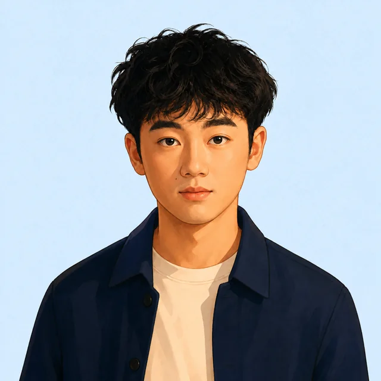

郑子杰 / JESKO-23
让 AI 进入业务，
让系统产生结果。
AI ARCHITECTURE ENGINEER
AI PRODUCT MANAGER
把 AI 变成真正跑在业务里的系统。
黑豆人工智能 · 2023—NOW · COMPANY PROJECTS / DE-IDENTIFIED

01BUSINESS PROBLEM先理解真实业务问题
02AI SYSTEM再构建可运行系统
03PRODUCT OUTCOME最后验证业务结果
CAPABILITIES / 我能带来的能力
三种能力，
一种工作方式。
从业务现场出发，把 AI 变成可执行、可验证、可持续优化的产品与系统。
01 / INPUT → DECISION → OUTPUT
AI 工具使用能力
资深 AI Coding 用户，用 AI 消除重复劳动，把时间留给业务判断与结果复核。
截图结构化日报独立审计
02 / OPERATE → TRACK → IMPROVE
运营能力
连接业务目标、数据、内容与交付，让运营动作进入可追踪的工作流。
跨境全流程内容与账户运营
03 / UNDERSTAND → BUILD → VERIFY
非程序员视角的 CODING 能力
不从技术名词出发，而从业务问题出发，把需求翻译成可运行的系统。
业务问题可运行系统
UNDERSTANDBUILDVERIFY
BLACK BEAN AI COMPANY PROJECT / 黑豆人工智能公司项目
黑豆跨境集群
HEIDOU CROSS-BORDER CLUSTER
根据企业需求量身定制的 AI 业务系统
连接采购、库存、物流、FBA 与海外仓的业务链路，打通数据与操作边界， 形成可追踪、可控、可复盘的跨境业务工作流。
BUSINESS FLOW / 业务流程
采购
PROCUREMENT
库存
INVENTORY
物流
LOGISTICS
FBA
FULFILLMENT
海外仓
OVERSEAS WAREHOUSE
不使用生成截图冒充项目证据；获得脱敏素材后再替换。
COMPANY PROJECT / DE-IDENTIFIED
AI 量化研究与
交易基础设施
从市场数据到执行、风控、账本与审计的完整研究体系； 研究与交易隔离，结果可复验，权限最小化。
-
数据采集
行情 · K线 · 账户 · 持仓 · 数据质量
-
处理与存储
清洗 · 特征 · 标签 · 版本快照 · 元数据
-
策略研究与推理
Python · CCXT · Pandas · 策略信号 · 在线推理
-
风控与执行
仓位检查 · 重复订单 · 权限校验 · 交易执行
-
账本与审计
订单 · 成交 · 持仓 · 风险事件 · 全链路复验
JESKO CONTRIBUTION架构参与定制 · Python / CCXT / Pandas 研究原型 · 交易系统与引导页已实现
风险说明架构设计与研究原型，不代表实盘收益
CAREER STORY · 2023—NOW
从业务理解，
到系统交付。
四个阶段不是平铺的年份，而是一条从设计思维走向 AI 产品化的成长路径。
-
背景转化
- 岭南师范学院 · 景观设计毕业
- 加入黑豆人工智能
- 将设计方法转化为产品与系统思维
- Azure AI 证书 · 历史学习证明
-
方法形成
- AI 量化研究原型
- 参与研究与交易基础设施定制
- 建立风控、权限与审计边界
-
系统落地
- 领星 OpenAPI 与 XLWMS
- 库存、物流看板与采购自动化
- 封装 Electron 桌面应用
-
产品化与持续交付
- 黑豆跨境集群 · SKU 生命周期
- 权限、稳定性与知识中心
- Monorepo、CI 与持续交付
- 下一站 · AI 产品经理
MY NEXT CHAPTER
先成为团队最可靠的“一块砖”，
先成为团队最可靠的“一块砖”，
再成长为能独立操盘项目的 AI 产品经理。
短期快速熟悉业务流程；长期持续积累产品判断、运营能力与项目交付经验。
LET'S BUILD
USEFUL AI PRODUCTS.